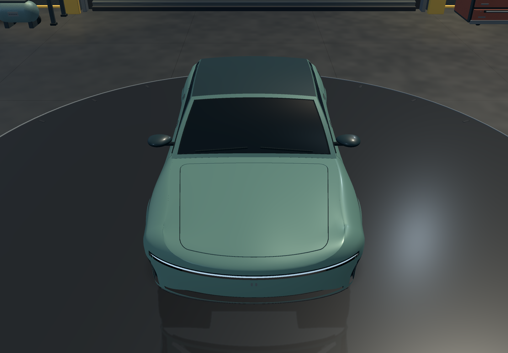
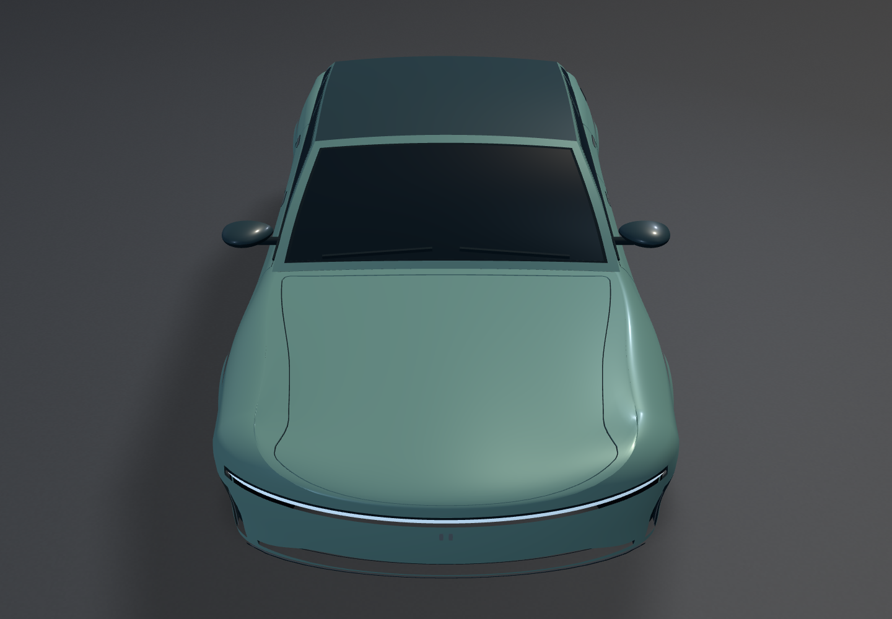
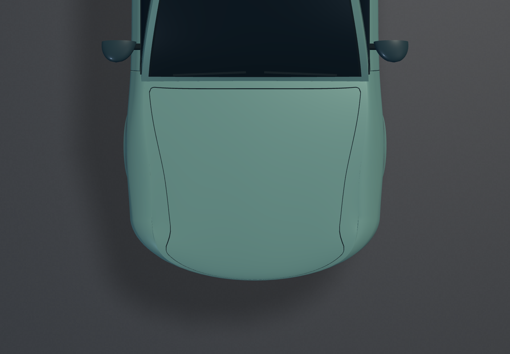
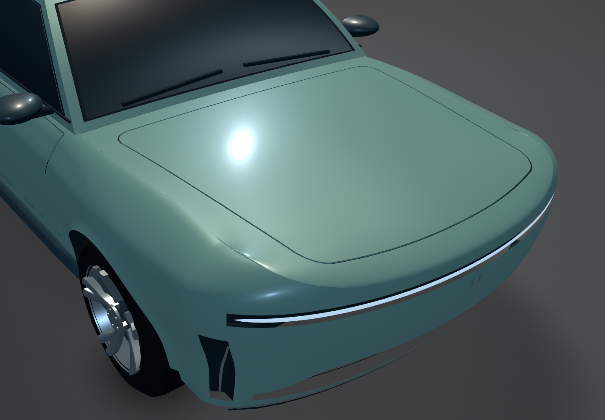
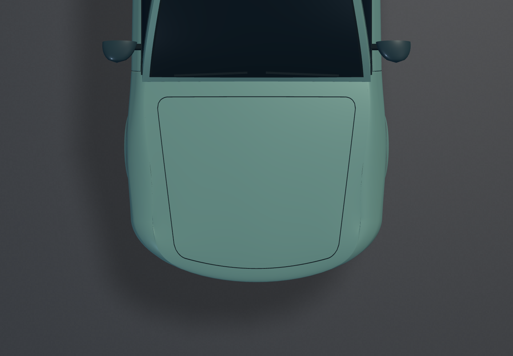
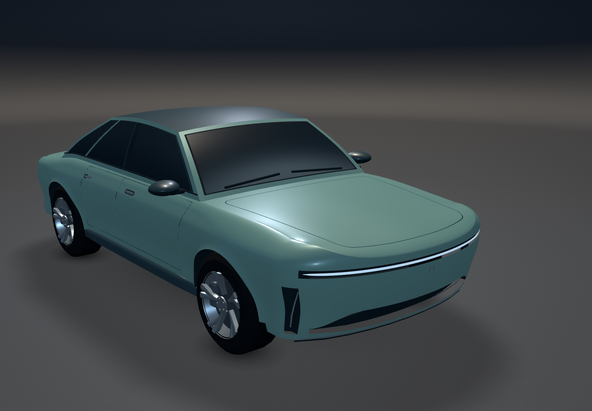
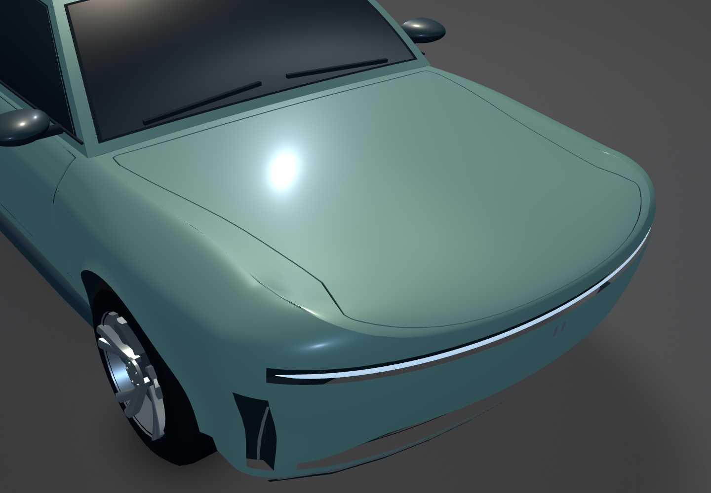

Matched native views of the marked outward nose hooks and the clean independent tapered outline. Both use identical cameras, paint and light rigs.
Desktop Mobile front | Desktop Mobile Garage | Actual measurements, commands and limitations






